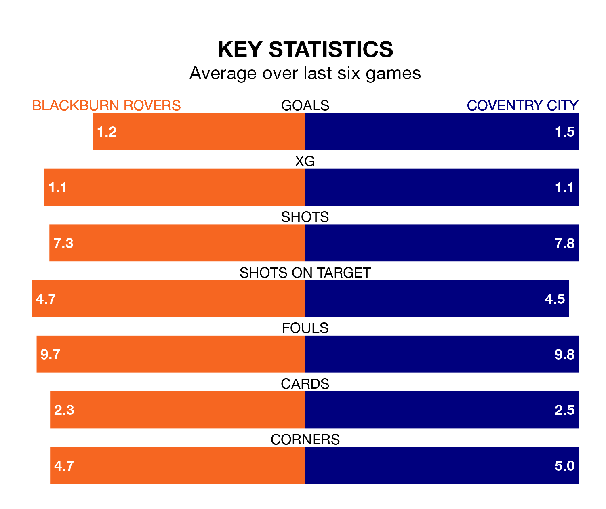

Coventry City make the journey to Ewood Park to play Blackburn Rovers on Saturday looking to pick up points to end their three-game losing streak.
Coventry's struggles have left them with six points from their last six EFL Championship matches, while their opponents have earned seven from a possible 18.
In Samuel Szmodics, Blackburn have the league's sharpest shooter so far this season. He has notched 25 goals in 42 appearances.
His goal rate of one every 149 minutes is quicker than that of Haji Wright, Coventry's top scorer with a goal every 180 minutes, and a total of 15 goals in 41 games.
With 68 goals in 43 games so far this season, City are scoring more than average in the league with 1.6 goals per game. And they are conceding at an average rate, letting in 55 goals at a rate of 1.3 per game.
Rovers, meanwhile, are average scorers, with 1.3 goals per game. They have conceded 1.7 goals per game.
In the last 10 years, Blackburn and Coventry have played each other on eight occasions. They won two each, and they drew four times.
On average, Blackburn scored 1.6 goals and the Sky Blues 1.1 in those matches.
Their last meeting was on October 4, when Coventry won 1-0 at home.
The home side are 19th in the table after 44 games, of which they have won 13 and drawn 10, earning 49 points.
The Sky Blues are 11 places ahead of Blackburn in eighth, with 17 wins and 12 draws putting them on 63 points.
Blackburn's last match was on Sunday, a 3-1 loss against Sheffield Wednesday, with Szmodics getting the goal for Blackburn.
Coventry lost 3-2 against Hull City last time out, on Wednesday, with Bobby Thomas and Kasey Palmer on the scoresheet.
Updated: 07:59 (UTC), 26/04/24